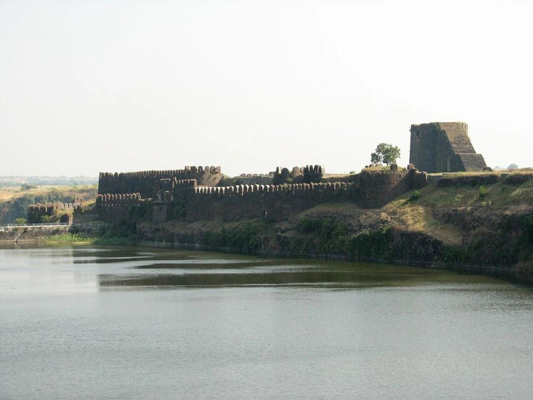
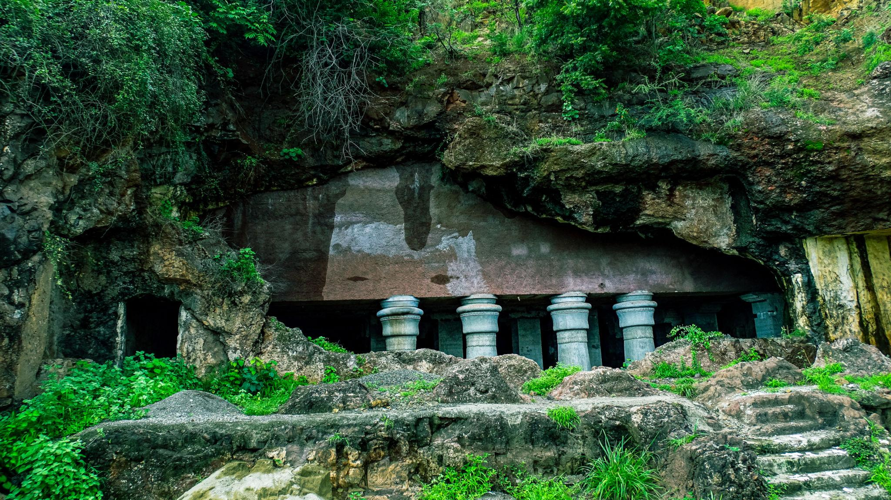
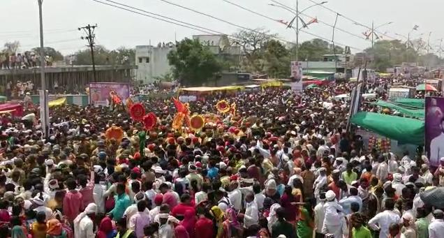
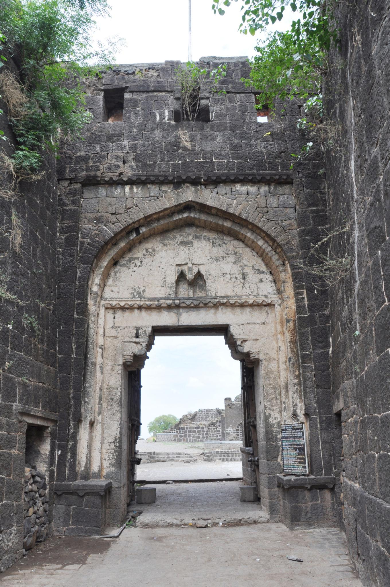
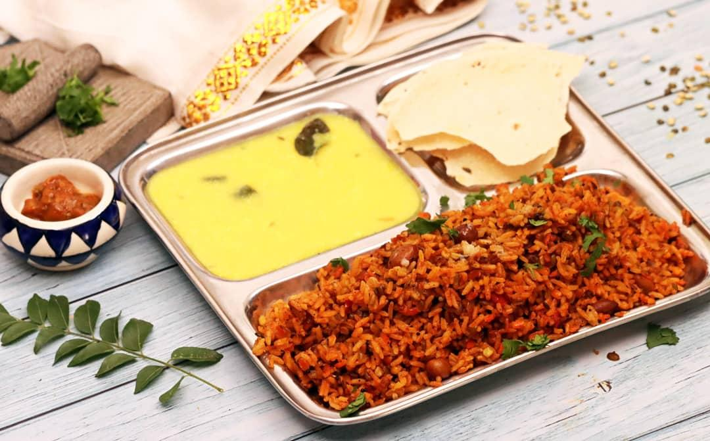
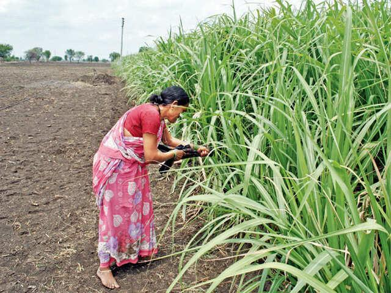
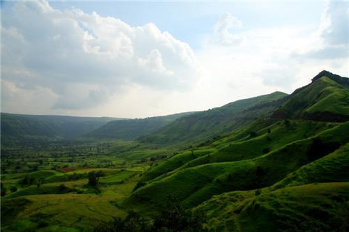
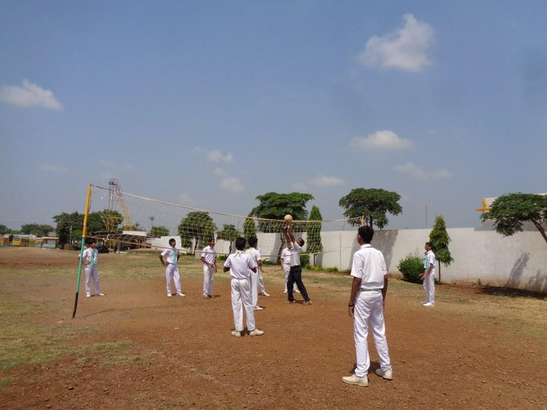

About

Osmanabad, officially named Dharashiv, is a deeply historic city in the south-central part of Maharashtra. It sits on the Balaghat Plateau and serves as a vital cultural link in the Marathwada region. The city blends old-world charm with a quiet, rural lifestyle. It is known for its welcoming people, ancient roots, and beautiful rolling hills.
- Location:Osmanabad (Dharashiv) is located in the south-central part of Maharashtra, India, resting on the scenic Balaghat Plateau within the Marathwada region.
- Famous as:The city is famous for the holy Tulja Bhavani Temple, the ancient rock-cut Dharashiv Caves, and historic medieval structures like the Naldurg Fort.
History

The city boasts a grand past that stretches back to ancient Indian empires. It was once ruled by the powerful Rashtrakuta, Satavahana, and Chalukya dynasties. Later, it became a key territory for the Yadavas of Deogiri, the Mughals, and the Nizams of Hyderabad. The city was renamed Osmanabad in the 20th century after the last Nizam, Mir Osman Ali Khan, before changing to Dharashiv in recent years to honor its older roots.
- Two thousand years ago, this land was a busy trade hub that sent goods all the way to the Roman Empire. In the 5th century, monks carved out the [Dharashiv Caves] as quiet spaces for prayer. Later, powerful kings built massive stone forts like [Paranda Fort] to guard the kingdom. In 1948, local heroes fought hard to free the land from the Nizam's rule so it could finally join independent India.
Culture

The local culture is a beautiful mix of Marathi traditions and Hyderabadi influences. People celebrate major festivals like Diwali, Dussehra, and Eid with immense joy and unity. The town comes alive with folk music, traditional dances, and vibrant street processions during public holidays. This shared heritage creates a peaceful and tight-knit community where different customs blend together perfectly
- Main Festivals:The city celebrates Tuljapur Bhavani Priatpad and Navratri with massive joy, alongside Ganesh Chaturthi, Diwali, and Eid.
- Traditional Arts:The region is famous for its Gondhal folk music, traditional wrestling art (Kusti), and Banjara embroidery.
- Language:Marathi is the primary spoken language, while Hindi, Dakhni, and Kannada are also widely understood.
Tourism

This region is a goldmine for travelers who love history, ancient architecture, and scenic views. You can explore the old rock-cut Dharashiv Caves, which date back to the 5th and 7th centuries. The massive Naldurg Fort is famous for its unique water dam built right into the fort walls. The grand Paranda Fort stands as a great example of military engineering from the medieval era.
- Naldurg Fort (Keywords: Medieval, Bori River, Stone Dam, Nar-Madi Waterfalls, Basalt Rock, Military Architecture)
- Dharashiv Caves (Keywords: Rock-cut, Balaghat Mountains, 5th Century, Buddhist, Jain, Ancient Carvings)
- Shri Tuljabhavani Temple (Keywords: Holy, Tuljapur, Goddess Bhavani, Chhatrapati Shivaji Maharaj, Shakti Peetha, Pilgrimage)
Famous Food

The food here is spicy, flavorful, and full of traditional Maharashtrian tastes. A local sweet dish called Lapsi, made from broken wheat, ghee, and jaggery, is made during special festivals. People also love eating hot pithla bhakri (chickpea flour curry with sorghum flatbread) and spicy peanut chutneys. The local markets are also famous for serving cool, refreshing glasses of Shikanji, a sweet cumin-tamarind drink.
- Famous Food:Spicy pithla bhakri (chickpea flour curry with sorghum flatbread) and hot shev bhaji, often served with fiery peanut and garlic chutneys.
- Local Specialty:Lapsi, a rich sweet dish made from broken wheat, pure ghee, and golden jaggery that locals cook during festive celebrations.
Economy

Agriculture is the main source of income for most families living in this area. Local farmers mainly grow crops like jowar (sorghum), bajra (pearl millet), pulses, and oilseeds. Since cotton grows very well here, the city has several cotton ginning factories. Dairy farming and sugar cane processing also help the local economy grow day by day.
- Key Industries:Cotton ginning and pressing units, small-scale sugar processing mills, and growing dairy farming cooperatives.
- Main Crops:Jowar (sorghum), bajra (pearl millet), pulses (turand gram), oilseeds, and high-quality cotton.
Environment

The region has a semi-arid climate with hot summers and a refreshing monsoon season. The landscape is filled with dry, open grasslands and low hill ranges. A major green highlight is the Yedsi Ramling Ghat Wildlife Sanctuary, which protects many wild animals like wolves, jackals, and deer. It is also a wonderful spot for birdwatching and acts as the green lungs of the district.
- Climate:Semi-arid with very hot summers, a refreshing monsoon season, and a dry, pleasant winter.
- Key Rivers:The Sina River, Bori River, Terna River, and the Manjara River that run through the terrain.
- Protected Areas:The Yedsi Ramling Ghat Wildlife Sanctuary, which shelters dry-land wildlife and offers great birdwatching.
Sports

Traditional Indian sports are incredibly popular among the youth here. Wrestling (Kusti) is a deeply respected sport, and many local boys train hard in traditional dirt pits called Akhadas. Schools and local clubs also actively promote team games like Kho-Kho and Kabaddi. In recent years, the government has built newer stadiums to help local athletes train for state and national events.
- Traditional Sports:Kusti (Indian wrestling), Kabaddi, and Kho-Kho are highly popular games played widely across the district.
- Focus:Training youth in traditional mud pits (Akhadas), promoting grassroots sports, and building newer stadiums for state-level meets.